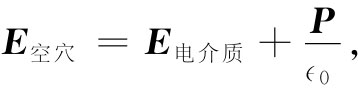

现在要转到这样一个问题上来，为什么在铁磁性材料中一个小磁场就会产生那么大的磁化强度。诸如铁和镍那种铁磁性材料的磁化强度来自原子内壳层中电子的磁矩。每个电子都具有等于q/（2m）乘以其g因子、再乘以其角动量J的磁矩μ。对于不具有净轨道运动的单个电子，g=2，而J在任一方向——比如在z方向——上的分量为±ћ/2，因而μ沿z轴的分量为
一个铁原子中，实际上存在两个对铁磁性有贡献的电子。为了使讨论比较简单，我们将谈谈关于镍的磁性，它是与铁相似的一种铁磁性材料，不过在其内壳层中只有一个电子。不难把该论证推广到铁的情况。
现在的要点在于，在一外加场B存在的情况下，那些原子磁体倾向于随场整齐排列，但受到热运动的冲撞，正如同我们对顺磁性材料曾描述的那样。在上一章中，我们曾找出企图把原子磁体排列整齐的场与力图把它们打乱的热运动之间的平衡会产生出这样的结果，即单位体积内的平均磁矩最后应为
（36.29）
所谓Ba ，我们意指作用于原子上的场，kT为玻耳兹曼能量。在顺磁性理论中，我们不过是用B本身表示Ba ，忽略了由附近其他原子在任何给定原子处贡献的那部分场。在铁磁性情况下，却存在一种复杂性。我们不应当用铁里的平均场表示作用于单个原子上的Ba 。相反，我们必须像在电介质情况下所做过的那样来处理——我们必须求出作用于单个原子上的局域 磁场。在精密计算中，我们应当把由晶格中所有其他原子对有关原子所贡献的场都相加起来。但正如我们对电介质所做过的那样，将做这样的近似，即在一个原子处的场与我们在该材料内一个小球形空穴中可能找到的场相同——假定其邻近原子的磁矩都不会因该空穴的存在而改变。
根据我们曾在第11章中所做的论证，也许认为可以写成
但这却不正确。然而，如果我们把第11章中的式子和本章中有关铁磁性的方程仔细比较一下，就会发现那里的一些结果还是可以 利用的。让我们把对应的方程放在一起，对不存在传导电流或传导电荷的区域，我们有：
这两组方程可以认为彼此相类似，只要做出如下的纯数学 性对应：
这与做出下列的类比相同：
E→H， P→M/c2 . （36.31）
换句话说，若我们将铁磁性的方程写成
那么它们看起来就很像 静电学方程了。
这种纯代数的对应性，过去曾经引起过某些混乱。人们往往认为H就是“磁场”。可是，正如我们已经明白，在物理上B和E才是基本场，而H只是一种衍生出来的概念。所以尽管方程式 彼此类似，但其物理 意义却不类似。然而，这不会阻止我们去运用相同方程具有相同解答的原理。
可以利用关于电介质中各种不同形状空穴中电场的以前结果——概括在图36-1内的场——来找出在各对应空穴中的场H。一旦知道了H，便可以确定B。例如（利用那些我们在第1节中总结出来的结果），在一个平行于M的针状空穴中，场H与在材料里的H相同，
H空穴 =H材料 .
但由于空穴中的M等于零，所以得
（36.33）
另一方面，在一个垂直于M的盘状空穴中，我们有

这可转换成
或者用B来表示，则为
B空穴 =B材料 . （36.34）
最后，对于一个球状空穴，通过与式（36.3）做类比，我们应有
这一结果与我们以前对于E所得的结果很不相同。
当然，通过直接利用麦克斯韦方程组，有可能用更加物理的方式来获得这些结果。例如，式（36.34）就是直接从▽·B=0推得的（你可以用一个一半在材料里而另一半在材料外的高斯面）。同理，你可以通过利用沿一条在空穴内部往上而通过材料后又返回的曲线的线积分而得到式（36.33）。在物理上，空穴中的场，由于表面电流——那是由▽×M提供的——而被削弱了。式（36.35）也可通过考虑该球形空穴边界上的表面电流效应而获得。我们将把它留给你们去证明。
为了由式（36.29）求得平衡时的磁化强度，事实证明，最方便的乃是同H打交道，从而写出
（36.36）
在那球形空穴的近似中，我们应该有λ=1/3，但是，正如你将会看到的，我们以后要用到某个其他值，因而就保留它作为一个可调参数。而且，我们还将假定所有的场都在同一个方向上，以致无需去担心那些矢量的方向。假如现在将式（36.36）代入式（36.29）中，就会有一个把磁化强度M与磁化场H相联系的方程：
然而，这是一个不可能明显解出的方程，因而将用图解法解它。
让我们把式（36.29）写成
而将问题置于一种普遍形式中，其中M饱和 为磁化强度的饱和值，即Nμ，而x则代表μBa /（kT）。M/M饱和 对x的依存关系由图36-13中的曲线a表示。我们也可以把x写成M的函数——利用关于Ba 的式（36.36）——为
对于任何给定的H值，这是M/M饱和 与x间的直线关系式。直线的x的截距在x=μH/（kT）处，而其斜率为∈0 c2 kT/（μλM饱和 ）。对于某个特定的H，我们会有一条像图36-13中标明为b的直线。曲线a与直线b的交点向我们提供了关于M/M饱和 的解。这样我们就把问题解决了。
图36-13 （36.37）和（36.38）两方程的图解法
让我们看一看，各种不同情况下的解答将会怎样。我们从H=0开始。有两种可能情况，分别用图36-14中的b1 和b2 两直线表示。你将从式（36.38）注意到，直线的斜率与绝对温度T成正比，因此，在高温 时就会有一条像b1 的线，其解答为M/M饱和 =0。当磁化场H为零时，磁化强度也为零。但在低温 时，我们会有一条像b2 的线，而对于M/M饱和 就有两个解答 ——一个是M/M饱和 =0，而另一个是M/M饱和 接近于1。事实证明，只有那个较高的解才是稳定的——正如你可以通过考虑围绕这些解的微小变化所看到的那样。
图36-14 求出当H=0时的磁化强度
于是，按照这些概念，磁性材料在足够低的温度下会自发地 使本身磁化。总之，当热运动足够小时，原子磁体间的耦合作用就会导致它们全部互相平行地排列起来——我们就有了一种与第11章中讨论过的铁电性相似的永磁材料。
若我们从高温出发而逐渐降低温度，则存在一个称为居里温度TC 的临界温度，在那里铁磁性行为突然出现。这一温度对应于图36-14中的直线b3 ，它与曲线a相切，因而具有等于1的斜率。居里温度由下式给出：
（36.39）
如果我们乐意的话，可以利用TC 将式（36.38）写得更简单些：
现在要来看看，对于小的磁化场H会发生什么情况。我们可以从图36-14看到，如果将那些直线稍微往右移动一下事情会怎样进行。对于低温情况，交点将沿着曲线a的低斜率部分移出一点点，而M就将改变得相对少一点。然而，对于高温情况，交点却沿曲线a的陡峭部分往上升，而M便将改变得相对快一些。实际上，可以将曲线a的这一部分用一条具有单位斜率的直线来做近似，并写成：
现在就可以解出M/M饱和 ：
这里有一条有些像顺磁性中有过的定律。关于顺磁性，我们曾有
（36.42）
此刻的一个差别在于，我们有一个用H表示的磁化强度，而H包含了各原子磁体相互作用的某些效应，但主要的差别还在于，磁化强度是与T和TC 之间的差值 成反比，而不仅仅与绝对温度T成反比。略去相邻原子间的相互作用就相当于选取λ=0，根据式（36.39）这意味着取TC =0。于是结果正好就是第35章中我们有过的。
可以把有关镍的理论图像与实验数据核对一下。在实验上已经观测到，当温度升高至超过631K时镍的铁磁性特征便消失了。我们可将此值与由式（36.39）计算出来的TC 相比较。记住M饱和 =Nμ，则有
根据镍的密度和原子量，可以得到
N=9.1×1028 m-3 .
从式（36.28）取μ，并设 ，则得
TC =0.24K.
存在的误差约等于2600倍！我们关于铁磁性的理论完全失败了。
可以像外斯（Weiss）曾经做过的那样，通过说明由于某种未知原因，λ不是等于三分之一，而是等于 ——或约900——尝试“修补”我们的理论。结果是人们对像铁那样的其他铁磁性材料获得了一些相似的值。为了弄清楚这意味着什么，让我们回到式（36.36）上去。我们看到，一个大的λ值意味着作用于原子上的局部场Ba ，似乎比我们所想到的要大得多。事实上，若写成H=B-M/（∈0 c2 ），则有
按照我们原来的意思——令 ——局部磁化强度M使有效场Ba 约减少 了量 。即使我们关于球形空穴的模型不是很好，仍然预期会有某些 减弱。与此相反，为了解释铁磁现象，我们必须想象场的磁化作用会把局部场增强 某个巨大——比如一千或更大——的倍数。似乎没有任何合理办法能在一个原子附近造成这么巨大的场——甚至适当符号的场也都不可能！显然，我们关于铁磁性的“磁”性理论是一场可悲的失败。因此必然得出结论，铁磁性必定与相邻原子中自旋电子间的某种非磁性 相互作用有关。这种相互作用必然会产生一种强大的趋势，使所有邻近的自旋都沿一个方向整齐排列。以后我们将会明白这必须用量子力学以及泡利不相容原理来处理。
最后，我们来考察在低温时——即T＜TC ——所发生的情况。我们已经看到，此时将有一种自发磁化——即使H=0——由图36-14中曲线a与b2 的交点给出。如果对于不同的温度——通过变更直线b2 的斜率——解出M，则我们就能得到如图36-15所示的那条曲线。对于所有其中原子磁矩都起因于一个单独电子的铁磁性材料来说，这条曲线应该是相同的。对于其他材料的曲线，只稍微有点不同。
在极限的情况下，如T趋向于绝对零度时，M变成M饱和 。当温度升高时，磁化强度会逐渐减少，至居里温度时就降为零。图36-15中的那些点是镍的实验观测值。它们与该理论曲线符合得相当好。尽管我们并不理解其基本机制，但理论的一般特征似乎是正确的。
图36-15 镍的自发磁化作为温度的函数
最后，在我们尝试理解铁磁性时，还有一个更令人烦恼的误差。我们已发现，在高于某一温度时该材料的性能应该像顺磁物质，其磁化强度M与H（或B）成正比；而在低于该温度时则它应变成自发磁化。但那不是我们测定铁的磁化曲线时所求得的。只有在我们使它“磁化”之后 ，它才会变成永久磁化。按照刚才所讨论的意思，它就应当本身磁化！毛病出在哪里呢？噢！事实证明，如果你对一块足够小 的铁或镍晶体进行观察，则它的确是完全磁化了的！但在一大块铁中，就有许多沿不同方向被磁化了的区域或“畴”，以致在大的尺度范围内平均 磁化强度似乎为零。然而，在每个小畴中，铁具有被锁住的、几乎等于M饱和 的磁化强度M。这种畴结构的重要性在于，大块材料的整体性质与实际进行处理的微观性质是很不相同的。我们将在下一次演讲中介绍大块磁性材料的实际行为。
[1] 假如所有其他电荷都是在导体上，这ρ其他 就会与我们在第10章中的ρ自由 相同。
[2] 这里原文是“和”，我们将其改为“代数和”，似较确切些。——译者注
[3] 或者如果你乐意的话，每一个面上的电流I应可以用两侧上的那些小块分解成50×50份。